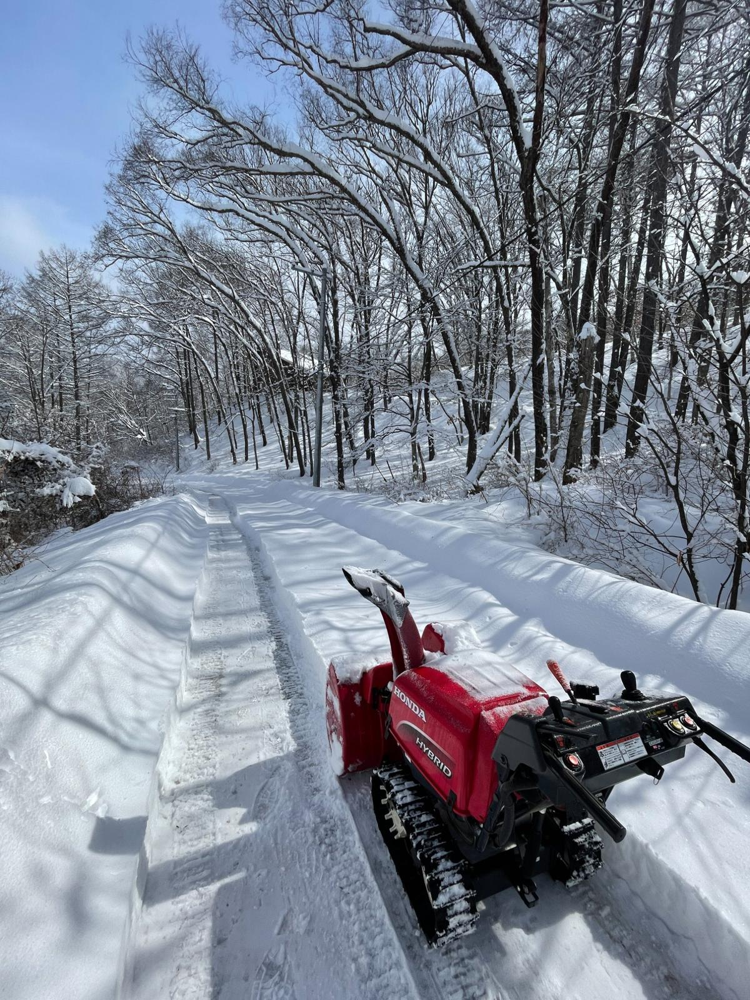
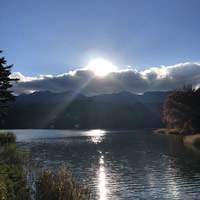
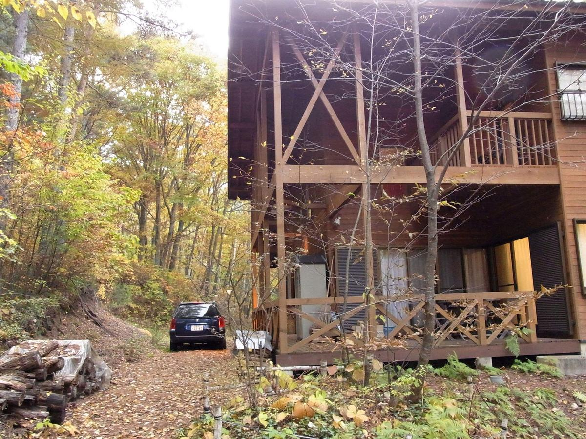

Step01
まず体験してみる。
奥八ヶ岳 Nature Base では、これから様々なイベントを予定しています！「自然暮らし1DAY体験会」などに実際に参加・体験できる入口です。




Step02
好き・遊び・仕事の境界線をなくす生き方を体験する。

基礎編
「好きなことが分からない」から始めていい。
DIY、自然×アニメ聖地巡礼、畑での野菜づくり、季節ごとのイベントに参加して、実際に体験しながら、「これ、ちょっと楽しいかも」を少しずつ増やしていきます。
応用編
基礎編で生まれた「これ、やってみたい！」を仲間と一緒に形にする。
一緒に創るプロジェクトを通して、自分の好き、楽しいをお客さんに提供して、ありがとうを対価として受け取る。「好き・遊び・仕事の境界線をなくす生き方」を実体験します。